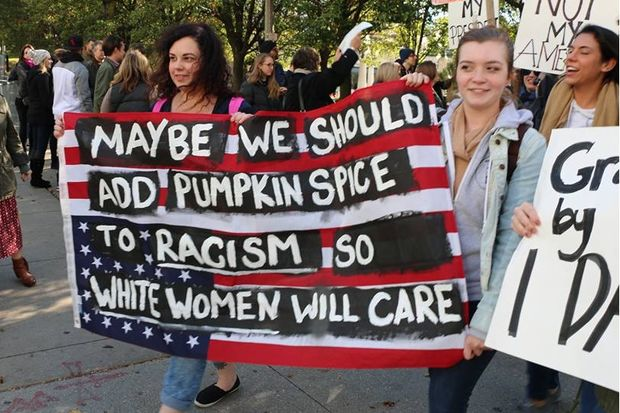

Simpson judge OKs jury prospects who admit bias

The pool of prospective jurors in the O.J. Simpson civil trial split along racial lines Tuesday, with whites saying Simpson was probably guilty of murder and African-Americans saying he is innocent.